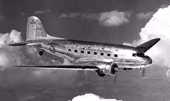

Curiosidades e histórias por trás da construção do primeiro avião do mundo
Era um dia frio do mês de dezembro de 1903. Um homem chamado Wilbur Wright estava na praia, em Kitty Hawk, na Carolina do Norte (EUA), olhando para o céu e testemunhando seu irmão Orville pilotar o primeiro voo motorizado bem-sucedido da história… opa! Que papo é esse? Cadê o brasileiro Santos Dumont nesse relato? E o debut das viagens comerciais, quando aconteceu? 🔗 Clique aqui para saber mais. Muitos detalhes cercam essa discussão, por isso fizemos um apanhado de fatos e dados sobre a construção do primeiro avião do mundo.
Santos Dumont não é o inventor do avião. Que história é essa?
Não, Santos Dumont não é reconhecido internacionalmente como o criador do avião, apesar de ter contribuído com o seu sucesso. Para boa parte do mundo, os verdadeiros inventores do meio de transporte são os norte-americanos Orville e Wilbur Wright. Se a disputa ficar apenas no campo dos voos, realmente temos de dar o braço a torcer: o Flyer I, dos irmãos Wright, teria decolado por menos de um minuto em 17 de dezembro de 1903 – três anos antes do 14-Bis, o protótipo do brasileiro.
O primeiro avião (de verdade) do mundo
A definição de “avião” no dicionário é abrangente: “qualquer aeronave que necessita de asas fixas e motores para se sustentar no ar”. Mas, o voo do aparelho, necessariamente, precisa ser controlado e obedecer aos comandos de um piloto. De acordo com o site Aventuras na História, considerando esse critério, nem o 14-Bis, nem o Flyer I realizaram a façanha e não podem ser considerados, de fato, aviões. 🔗 Clique aqui para saber mais O primeiro avião (de verdade) do mundo foi o Flyer III, projeto posterior dos irmãos Wright. Em 5 de outubro de 1905, Wilbur voou por 39 minutos sobre um campo em Dayton, nos Estados Unidos (pois é, isso também foi antes do 14-Bis). Por conta das poucas provas e testemunhas, o feito só rendeu mérito anos depois, em 1908, quando o Flyer III alçou, publicamente, diversos voos na França.
O legado de Santos Dumont foi importantíssimo
Enquanto isso, os Wright colecionavam disputas judiciais pela patente de suas invenções, Dumont era disruptivo. Ele pode não ter criado o primeiro avião do planeta, mas produziu o segundo sem direitos de reprodução. O modelo “Demoiselle” foi um tremendo incentivo à aviação mundial por causa disso – ganhou mais de 100 cópias pelo mundo. Pai da aviação faz assim, né?
O primeiro voo comercial
O primeiro voo comercial do mundo data de 1º de janeiro de 1914. Partiu de Saint Petersburg com destino a Tampa, ambas cidades na Flórida, nos Estados Unidos. Foram apenas 23 minutos a bordo de um hidroavião, comandado pelo piloto Tony Jannus. O único passageiro foi o então prefeito de Saint Petersburg, Abram Pheil, que pagou US$ 400 em leilão para garantir o lugar na aeronave. 🔗 Clique aqui para saber mais.
Linha do tempo: uma breve história dos voos tripulados
Já produzimos máquinas que transportam centenas de passageiros, quebramos a barreira do som, levamos astronautas para a lua, robôs para Marte e civis para o espaço. Reunimos aqui, em ordem cronológica, alguns dos destaques da história moderna do voo:
1903: os irmãos Wright criam o Flyer I e fazem o primeiro teste bem-sucedido de um protótipo de avião – o voo foi impulsionado, em linha reta, a baixa altitude e curta distância.
1905: o Flyer III voa por 39 longos minutos e 38,5 km, com diversas voltas sobre um campo em Dayton, Ohio. É o marco da construção do primeiro avião de verdade, capaz de voo controlado. Pouca gente testemunhou o feito, o que teria gerado a discórdia em relação aos verdadeiros inventores da máquina.
1906: em Paris, o 14-Bis, de Santos Dumont, voa por 220 metros em 21,5 segundos.
1908: Wilbur leva seu avião a França, onde faz mais de 200 voos de demonstração, o maior deles de quase duas horas. Os europeus se rendem aos irmãos Wright e transferem o título de “inventores do avião”, antes atribuído a Dumont.
 1919: acontece o primeiro voo transatlântico non-stop da história da aviação. Dois britânicos, John Alcock e Arthur Whitten Brown fizeram a travessia partindo de de St. John s, no Canadá, para Clifden, na Irlanda.
1919: acontece o primeiro voo transatlântico non-stop da história da aviação. Dois britânicos, John Alcock e Arthur Whitten Brown fizeram a travessia partindo de de St. John s, no Canadá, para Clifden, na Irlanda.
Outro fato curioso também aconteceu em 1919. A companhia aérea holandesa KLM (que mais tarde se fundiu com a francesa Air France), realiza seu primeiro voo e se consagra como a mais antiga empresa do ramo ainda em operação. No ano seguinte, ela lança o serviço de voos regulares entre Amsterdã e Londres. No primeiro ano de operação, a empresa transportou 354 passageiros – hoje, bastaria um único avião Boeing 747 para levar essa quantidade de pessoas.
1927: Charles Lindbergh completa o primeiro voo transatlântico solo sem escalas a bordo do Spirit of St. Louis, viajando de Nova York para Paris.
1935: os voos transatlânticos começam a operar em escala. A Pan Am colocou no ar o primeiro deles, no longo trecho entre San Francisco, nos EUA, e Manila, nas Filipinas. O voo precisou de uma semana para ser finalizado e carregava 100 mil correspondências.
1936: a pedido do CEO da American Airlines, o avião DC-3 foi desenvolvido para suprir uma demanda de passageiros em viagens de média distância pelos Estados Unidos. O modelo entra em operação fazendo voos sem escalas entre Nova York e Chicago, o que revolucionou o transporte de passageiros. Quando a Segunda Guerra Mundial estourou, o DC-3 já estava em uso em todo o mundo.
1952: o Comet faz história por ser a primeira aeronave comercial propulsionada por motores a jato. Com quatro reatores embutidos nas asas, começou a operar em 1952, pela companhia aérea inglesa BOAC, com primeiro voo entre Londres, na Inglaterra, e Joanesburgo, na África do Sul. Uma aeronave cheia de diferenciais, cobiçada pelas principais aéreas do mercado.
1954: após dois acidentes fatais, o Comet fica proibido de voar. Um inquérito constatou falhas no projeto das aeronaves: como os jatos voam em altitudes superiores, as oscilações de temperatura e o sistema de pressurização causam fadiga no material, problema desconhecido na época.
1969: é apresentado pela primeira vez o Boeing 747 (também conhecido como Jumbo). A linha de produção deu conta de 168 unidades, incluindo o protótipo de testes. Tinha configuração padrão para 366 passageiros divididos em três classes de cabine e autonomia para 8.560 quilômetros.
1976: o Concorde, avião comercial supersônico de passageiros, voa pela primeira vez em serviço regular, fazendo duas rotas: Londres a Bahrein e Paris a Rio de Janeiro.
1981: a American Airlines cria o primeiro programa de fidelização, o American Airlines AAdvantage, iniciativa que seria copiada pelas principais companhias aéreas do mundo.
Anos 2000: o primeiro voo de volta ao mundo sem escalas de um avião movido a energia solar e bateria é concluído. A Airbus lança o jato de passageiros civil de dois andares.
2010: A Virgin Galactic inicia voo de passageiros civis para o espaço.
Fique sempre de olho nas novidades publicadas aqui, no blog da Travelex Confidence!
Fontes: 🔗 Clique aqui para saber mais.